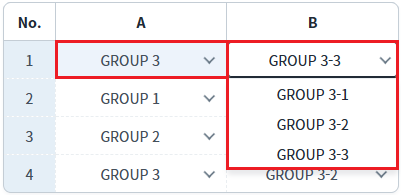
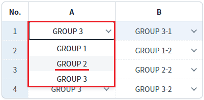
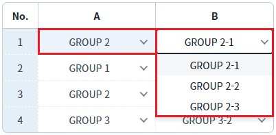
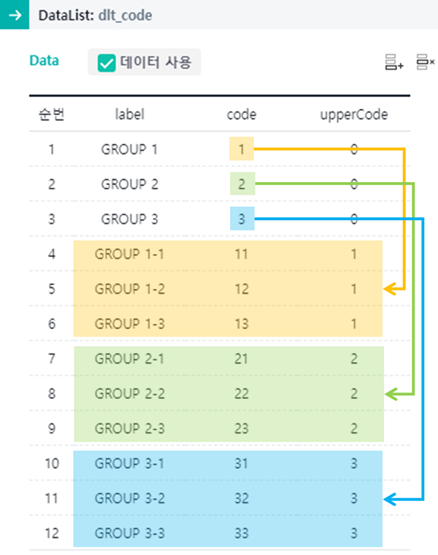
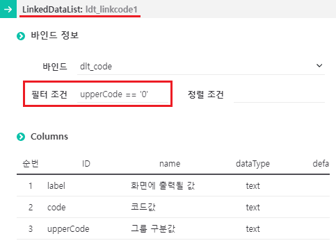
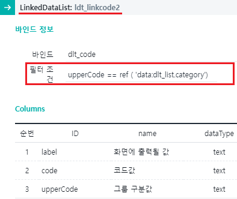
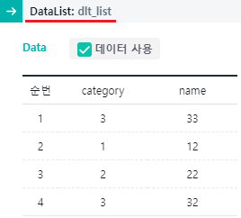
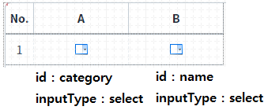
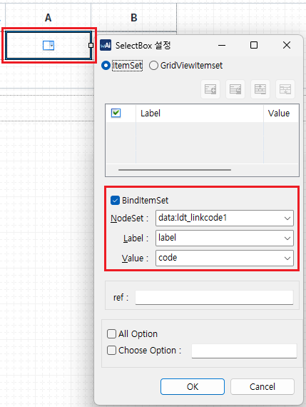
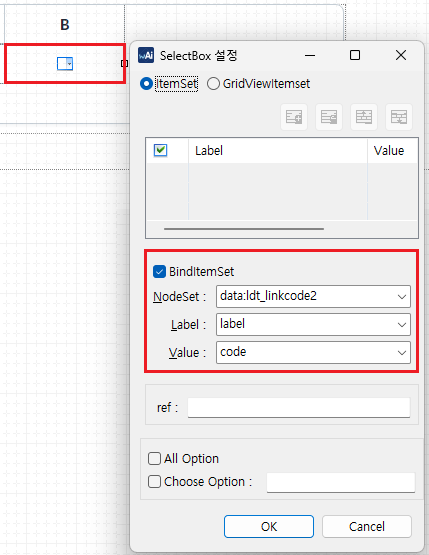

LinkedDataList를 사용하여 GridView의 'A' 컬럼의 값에 따라 'B' 컬럼의 목록을 동적으로 구성하는 예제입니다. GridView의 'A' 컬럼의 선택값에 따라 'B' 컬럼목록이 변경됩니다.
'A' 컬럼의 선택 값에 따라 'B' 컬럼의 목록 구성하기
이 예제는 문서를 통해 구조를 대략 이해하고 예제 파일을 실행하여 테스트해보는 것을 추천합니다.
'A' 컬럼에서 선택된 항목에 따라 'B' 컬럼의 항목이 변경됩니다.
1
STEP 1: 'A' 컬럼의 값과 'B' 컬럼의 목록 확인합니다.
첫 번째 행의 'A' 컬럼에는 'GROUP 3'이 표시되고, 'B' 컬럼에는 'GROUP 3-3'이 표시됩니다. 'B' 컬럼의 목록은 'GROUP 3-1', 'GROUP 3-2', 'GROUP 3-3' 로 구성되어 있습니다.
Image 1.브라우저(Chrome) 실행 예시

2
STEP 2: 'A' 컬럼의 값을 변경합니다.
'A' 컬럼의 목록에서 'GROUP 2' 항목을 선택합니다.
Image 2.브라우저(Chrome) 실행 예시

3
STEP 3: 실행 결과를 확인합니다.
'A' 컬럼은 'GROUP 2'가 표시되고, 'B' 컬럼은 'GROUP 2-1'가 표시됩니다. 'B' 컬럼의 목록은 'GROUP 2-1', 'GROUP 2-2', 'GROUP 2-3' 로 구성됩니다.
Image 3.브라우저(Chrome) 실행 예시

GridView와 DataCollection의 기본에 대한 이해도가 있다는 전제로 주요 구조, 설정만 작성되어있습니다.
LinkedDataList의 이해가 없는 분들은 관련 링크를 통해 기본 구조 등을 확인하시는 것을 권장합니다.
이 예제는 2개의 DataList와 2개의 LinkedDataList를 사용했습니다. 아래는 예제에 구현된 DataCollection ID별 설명입니다.
ID | Type | 용도 |
|---|---|---|
dlt_list | DataList | GridView와 연결된 데이터. |
dlt_code | DataList | 'A' 컬럼과 'B' 컬럼의 목록을 구성할 전체 코드 목록입니다. ldt_linkcode1, ldt_linkcode2 의 원천 DataList. |
ldt_linkcode1 | LinkedDataList | 'A' 컬럼의 목록을 구성합니다. dlt_code에서 upperCode 컬럼의 값이 0 인 데이터만 추출. |
ldt_linkcode2 | LinkedDataList | 'B' 컬럼의 목록을 구성합니다. dlt_code에서 upperCode 컬럼의 값이 dlt_list의 category 컬럼의 값과 같은 목록을 추출. dlt_list가 GridView와 연결되어 있는 경우 GridView의 행 별로 조건이 적용됩니다. |
dlt_code의 컬럼은 label, code, upperCode로 구성되어있습니다.
label : 화면에 출력될 값
code : key 값
upperCode : 상위 그룹의 key 값
아래는 dlt_code의 데이터를 담은 스튜디오 이미지 입니다.
Image 4.dlt_code의 데이터 구조 예시

LinkedDataList 'ldt_linkcode1'은 GridView의 'A' 컬럼 목록과 연결되어있습니다. 'ldt_linkcode1'는 DataList 'dlt_code'와 연결되어있으며 조건은 "upperCode == '0'" 입니다.
Image 5.ldt_linkcode1 설정 예시 이미지

아래는 Source 본문입니다.
Example 1.Source
<w2:linkedDataList id="ldt_linkcode1" bind="dlt_code"> <w2:condition type="filter"><![CDATA[upperCode == '0']]></w2:condition> <w2:condition type="sort"><![CDATA[]]> </w2:condition> </w2:linkedDataList>
LinkedDataList 'ldt_linkcode2'는 GridView의 'B' 컬럼 목록과 연결되어있습니다.
'ldt_linkcode2'는 Datalist 'dlt_code'와 연결되어있으며 조건은 "upperCode == ref ('data:dlt_list.category')" 입니다.
GridView에 연결된 DataList 'dlt_list'의 'category' 컬럼의 값이 'dlt_code'의 'upperCode' 컬럼과 같은 데이터만 추출됩니다. GridView의 행 마다 조건이 적용됩니다.Image 6.ldt_linkcode2 설정 예시 이미지

아래는 Source 본문입니다.
Example 2.Source
<w2:linkedDataList id="ldt_linkcode2" bind="dlt_code"> <w2:condition type="filter"><![CDATA[upperCode == ref ( 'data:dlt_list.category')]]></w2:condition> <w2:condition type="sort"><![CDATA[]]> </w2:condition> </w2:linkedDataList>
GridView에 출력할 데이터입니다. 'A' 컬럼과 'B' 컬럼은 selectbox로 구성되어있기 때문에 데이터가 code값으로 구성되어있습니다.
Image 7.dlt_list 데이터 예시

GridView의 주요 설정에 대한 예시입니다.
Image 8.GridView UI 설정 예시

Image 9.GridView의 'A' 컬럼의 목록(itemSet) 설정 예시

Image 10.GridView의 'B' 컬럼의 목록(itemSet) 설정 예시

'A' 컬럼이 변경되면 'B' 컬럼의 셀 목록은 변경되지만 셀의 값(value)은 기존에 선택된 값이 남아있게 됩니다. 그래서 사용자가 'A' 컬럼을 변경하면 'B' 컬럼의 값을 'B' 컬럼 목록 중 첫 번째 값으로 할당하는 스크립트를 GridView의 'onafteredit' 이벤트를 사용하여 작성합니다.
Example 3.Script
/** * gridView의 afteredit 이벤트 핸들러 */ scwin.grd_example_onafteredit = function(row,col,value) { var id = this.getColumnID( col ); if ( id == 'category' ) { //이미 선택되어있는 value값 변경해주기 var tmpValue = dlt_code.getMatchedColumnData("code",dlt_list.getCellData(row, "category") ,"upperCode"); if (tmpValue[0] != value ) { dlt_list.setCellData(row, "name", ldt_linkcode2.getCellData(0, "code")); } } };